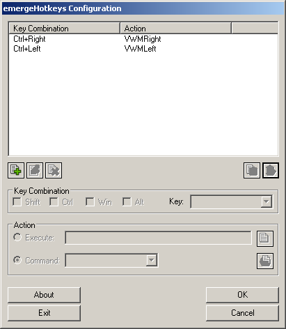

a new Key Combination, after selecting the action the user should click on Save
a new Key Combination, after selecting the action the user should click on Save  to save the hotkey or Clear
to save the hotkey or Clear | About |
emergeHotkeys is the hotkey applet of Emerge Desktop. It defines a set of hotkeys that allow quick access to Emerge Desktop functions as well as launching other applications.
| Configuration |
emergeHotkeys is configured by pressing simultaneously the 'Shift' and 'Esc' keys. This will display the emergeHotkeys Configuration dialog box
The key combination for a hotkey can be selected by ticking the modifiers Shift, Ctrl, Win or Alt (or none) and one key from the drop down list. Any keyboard key can be assigned to a new task even unused keys like Pause can be set to launch a Calculator. It is wise not to set a character key without any modifier since this will prevent from typing text.
Important Note: the Win key (alone) can also be assigned by selecting LeftWinKey or RightWinKey from the Key drop list. Key combinations don't work with the Win key only.
A hotkey can be assigned to a file, a folder or an emerge Internal Command. To Add a new Key Combination, after selecting the action the user should click on Save to save the hotkey or Clear  to start again. If the hotkey selected is already in use by another program or reserved by the system,a warning message is displayed and the user has the opportunity to modify the key combination until a valid one is chosen.
to start again. If the hotkey selected is already in use by another program or reserved by the system,a warning message is displayed and the user has the opportunity to modify the key combination until a valid one is chosen.
Hotkeys displayed in the list box can be Modified  or Deleted
or Deleted  .
If at any time the user adds, deletes or modifies incorrectly any key, he can undo changes by pressing the Cancel button. This will close the Configure box without saving any modifications since the dialog was opened.
.
If at any time the user adds, deletes or modifies incorrectly any key, he can undo changes by pressing the Cancel button. This will close the Configure box without saving any modifications since the dialog was opened.
Hotkeys are stored in the registry only after pressing the OK button. This will also close the Configuration dialog
The Exit button closes the emergeHotkeys module. It can be restarted by running the executable file emergeHotkeys.exe.
emergeHotkeys settings are stored in HKEY_CURRENT_USER\Software\Emerge Desktop\emergeHotkeys and consist of the following subkeys:
| Usage |
emergeHotkeys is used to define a set of hotkeys. Once the hotkeys are defined, you can use the key combination to execute the action specified.